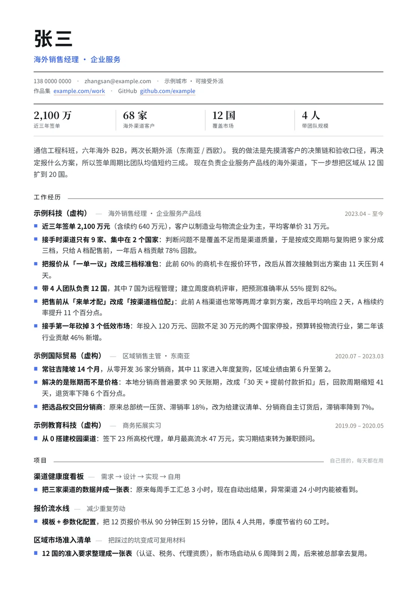
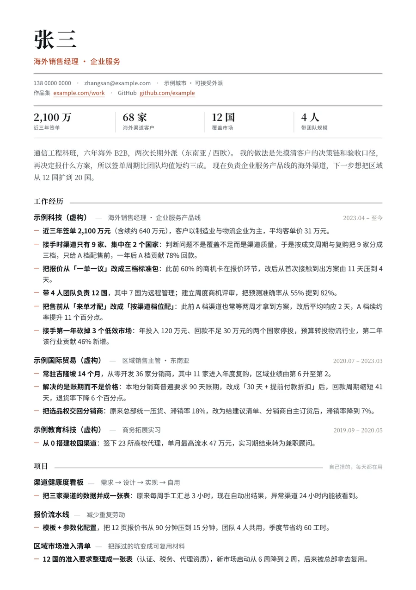
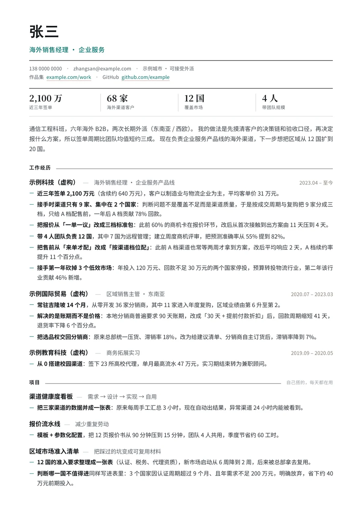
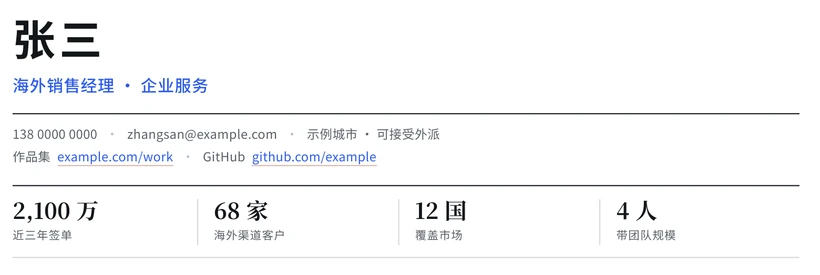
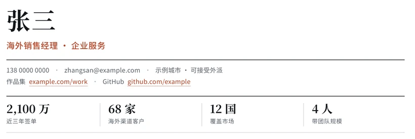
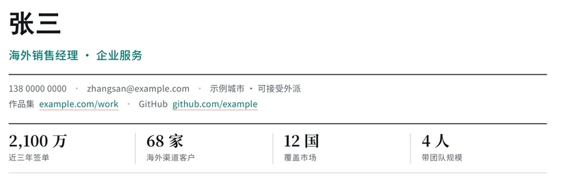

简历工坊 Pro
中文简历的内容与版式 · 一个会在交付前拦住你的技能
有无旧简历、JD 或作品链接都能开始。这里同时处理说什么和怎么排：先确认结构线框与全文，再选择唯一排版路线；可编辑 DOCX 由 Microsoft Word 导出同源 PDF，最后过脚本与真实视觉复核。

等线 · #2F5BEA
克制、可信

宋体 · #B4472B
有书卷气

等宽 · #0F766E
技术文档感
三份都是真实渲染，内容完全相同；差别只在版式预设。纸张 A4 210 × 297 mm，版心 174 mm。
两个问题，两份规范
说什么
业务问题 → 我的判断 → 我的动作 → 可验证结果
不是每段都要写全，优先补足具体对象、个人动作和可验证结果；没有判断或数字时不硬凑。
如果出现判断，它应当是一个可以被追问的真实选择；写不出时不硬凑，清楚的事实同样有价值。
怎么说
留白 → 字重 → 细线 → 颜色
层级靠这四样依次递减，颜色排在最后：默认少标，具体重点随全文清单一并确认。
判断标准只有一条：把颜色和 logo 全去掉，还好看吗。去掉就散，说明层级是靠装饰撑的。
负责区域渠道开拓，开发若干客户。
将区域客户按需求与采购阶段分层，用看板跟进；3 个月完成 18 家有效接洽、5 家付费转化（虚构示例）。
左侧这句话任何人都能写；右侧暴露了「怎么想的」，面试官才有得追问。
同一份内容，三种气质
换版式不改内容。如果换完之后某条读着别扭，那是内容的问题，不是版式的问题——这条判断省掉了很多来回。

- swiss
- 姓名 等线 Bold 25
- 章节 8.3 / 字距 1.4
- 项目符号 ▪
- 强调色 #2F5BEA

- editorial
- 姓名 宋体 29 / 字距 3.0
- 章节 8.5 / 字距 2.0
- 项目符号 –
- 强调色 #B4472B

- mono
- 姓名 等宽 21
- 章节 7.9 / 字距 1.0
- 项目符号 +
- 强调色 #0F766E
swiss 克制可信，适合投企业；editorial 有书卷气；mono 密度最高，适合技术岗。上图为同一份虚构样例的真实渲染。
两次确认，最后重新终排
| 门 | 位置 | 通过条件 |
|---|---|---|
| G1 | 确认 1｜结构线框 | 页数、章节顺序、页面配比、阅读顺序与重点位置已确认 |
| G2 | 确认 2｜全文文字稿 | 完整正文、标蓝清单与 JD 差距表已确认 |
| G3 | 终排与交付 | 内容膨胀后重新分页；核心闭合，严格与未做单列，真实视觉复核 |
结构与正文分别确认。 终排不是把正文灌进旧模板：内容膨胀后必须重新检查分页、密度和末页留白；语义删减回到正文确认。
可编辑 DOCX，PDF 只认同一排版源
生成与导出
YAML → DOCX → Microsoft Word PDF
正文保持普通可编辑段落；URL 是真实超链接，照片只给宽度并等比显示。浏览器和系统打印驱动不冒充 Word 同源导出。
实际产物验收
全文一致 → 链接 → 字体／照片 → 重导出
不看“应该如此”的生成参数，直接检查 DOCX、PDF 和逐页渲染图。未安装字体、未做视觉或未做第二次导出，都保留 NOT_RUN。
核心、严格、建议，不再只报“全绿”
退出码 0 表示核心闭合，1 表示有失败，2 表示核心未完成。严格项未做不会被藏进 PASS；建议未达也不会冒充核心失败。
| 状态 | 检查项 | 结果 |
|---|---|---|
| PASS · 核心 | 源文覆盖 | 66 段源文均出现在 PDF |
| PASS · 核心 | DOCX／PDF 文本一致性 | 归一化后 1,602 字符逐字一致 |
| PASS · 核心 | 可点击链接 | DOCX 与 PDF 均为 2 / 2 |
| PASS · 核心 | 视觉复核 | 逐页 PNG 已查看并登记 |
| PASS · 严格 | 重导出像素差 | 同 DPI 下逐页像素差为 0 |
| NOT_RUN · 严格 | Word 编辑—撤销 | 未做，保持未完成 |
| WARN · 建议 | 带照片样例的 PDF 照片像素 | 196 × 275，低于建议值，单独提醒 |
这组结果的正确结论是“核心通过、严格未完成、照片建议有提醒”，不是“全部通过”。完整 JSON／Markdown 报告同时保存文件哈希与每项证据。
下面这块，是简历的字号阶梯
比文字更决定「贵不贵」的，是字号阶梯的间距是否成比例。相邻层级字号差要 ≥ 1.2 倍，否则看着含糊。
上面六行的字号、字距与行高，与 PDF 里完全一致；网页用的是同一套 pt 值。桌面端这块宽度即版心 174 mm。
空话词会提醒或阻断，具体表述可豁免
它们的问题不是不好听，而是不可证伪——审稿人无法验证，只能当作噪声跳过。写进简历等于占了一行版面却没给信息。
清单只收空话，不收技术动词：「对齐口径」「拆解需求」这类合法用法不在其中。用户确认的具体表述可用 qa.py --allow-word "词" 显式豁免，豁免记录会写进 QA 结果。
它明确不做什么
- ATS 打分
- 不做关键词匹配与打分，那是另一类工具的活
- 视觉炫技
- 不做彩条、时间轴、图标墙；这里的审美是克制的版式
- 英文润色
- 只做结构与版式迁移，不做语言润色
- 输入入口
- 支持无简历、只有 JD、个人主页、GitHub、作品集与已有简历；低置信度字段集中核对，不能猜
边界写进技能，比写进宣传语有用：知道什么时候不该用它，才不会拿到一份排版漂亮、内容错误的简历。